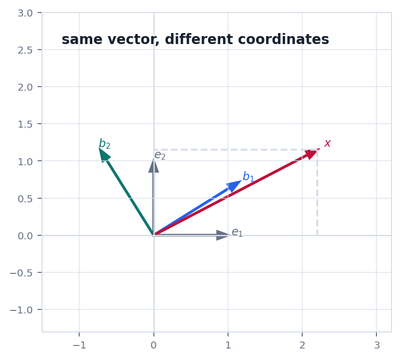
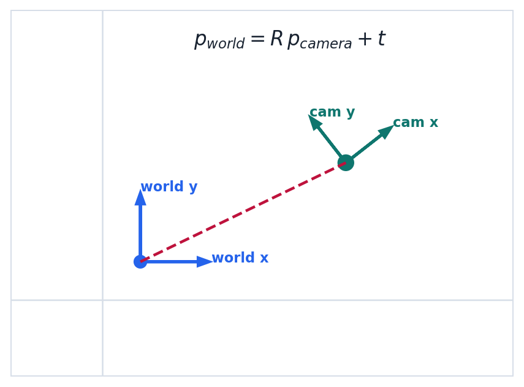

Route
0. 全章主线
线性变换是动作, 矩阵是这个动作在某组基下的坐标表达.
变换把一个向量送到另一个向量.
线性保持加法和数乘.
矩阵表示由基向量的像决定.
核与像研究消失方向和可达方向.
换基同一动作换一种坐标写法.
Definition
1. 线性变换的两个条件
线性变换必须保持线性组合结构.
$$
T(u+v)=T(u)+T(v),\quad T(cv)=cT(v)
$$
这两个条件合起来意味着 $T(c_1v_1+\cdots+c_kv_k)=c_1T(v_1)+\cdots+c_kT(v_k)$. 所以只要知道一组基向量被送到哪里, 就能确定整个线性变换.
判断技巧如果一个变换包含平移 $x\mapsto Ax+t$ 且 $t\ne0$, 它一般不是线性变换, 因为零向量没有被送到零向量.
Structure
2. 核, 像和秩-零度
核告诉我们哪些输入被压没, 像告诉我们哪些输出能达到.
$$
\ker T=\{v:T(v)=0\},\quad \operatorname{im}T=\{T(v):v\in V\}
$$
核越大, 说明变换丢掉的信息越多. 像越小, 说明输出空间中可达到的范围越受限制.
$$
\dim V=\dim\ker T+\dim\operatorname{im}T
$$
这条公式把输入空间分解成"消失的自由度"和"真正进入输出的自由度".
Coordinates
3. 坐标变换不是向量变了
同一个向量在不同基下有不同坐标, 但几何对象本身没有改变.
若 $P=[b_1\ b_2\ \cdots\ b_n]$ 的列是新基向量在旧坐标下的表示, 那么新坐标 $[x]_B$ 和旧坐标 $[x]_E$ 满足:
$$
[x]_E=P[x]_B,\quad [x]_B=P^{-1}[x]_E
$$
同一线性变换 $T$ 在不同基下的矩阵会改变. 若旧基下矩阵是 $A$, 新基下矩阵是 $B$, 常见关系为:
$$
B=P^{-1}AP
$$
这就是相似矩阵的来源: 数字矩阵变了, 但它们描述的是同一个线性变换.
Geometry
4. 几何图像: 同一对象, 不同坐标
坐标系换了, 向量和传感器位置的几何关系没有换.


Physics
5. 物理问题: 刚体姿态和坐标框架
测量系统里, 物理点不变, 变的是观察它的坐标框架.
问题相机看到一个点的坐标 $p_c$, 机器人控制系统需要世界坐标 $p_w$. 如果两套坐标轴之间只有旋转和平移, 就可以写成刚体变换.
$$
p_w=Rp_c+t,\quad R^TR=I
$$
严格说 $p\mapsto Rp+t$ 是仿射变换, 不是线性变换. 但齐次坐标可以把它写成矩阵乘法, 这也是图形学和机器人学里常见的工程做法.
Checklist
6. 实战清单与易错点
换基题最大的风险是把对象和坐标混在一起.
实战清单
- 当前矩阵表示哪个变换?
- 基向量是按列还是按行放入换基矩阵?
- 公式是在旧坐标转新坐标, 还是新坐标转旧坐标?
- 核和像分别属于哪个空间?
高频错误
- 把 $P^{-1}AP$ 写成 $PAP^{-1}$.
- 把坐标数字变化理解成向量本身变化.
- 忘记平移不是线性变换.
- 核空间和解空间的关系说不清.
记住线性变换是结构保持的动作. 矩阵是动作在某组基下的坐标说明书.